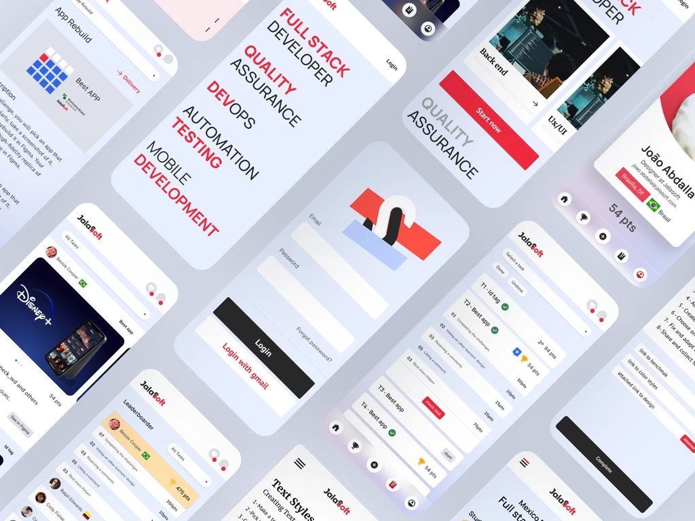
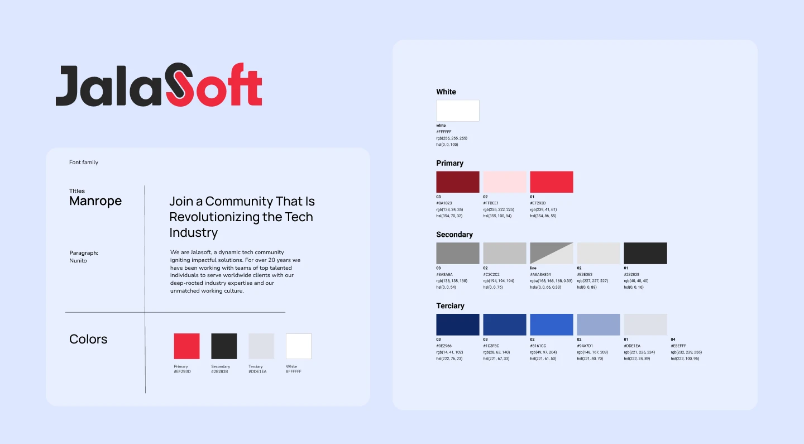
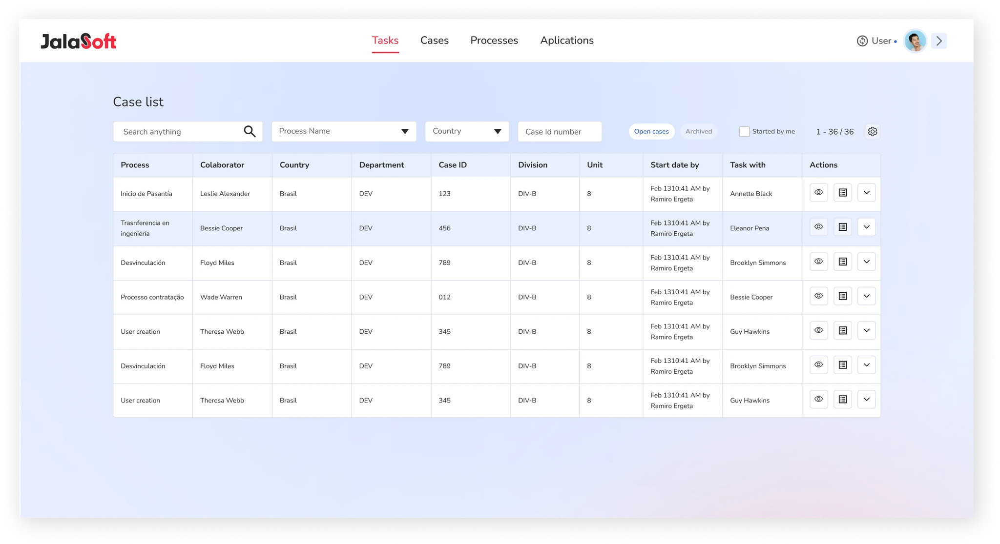
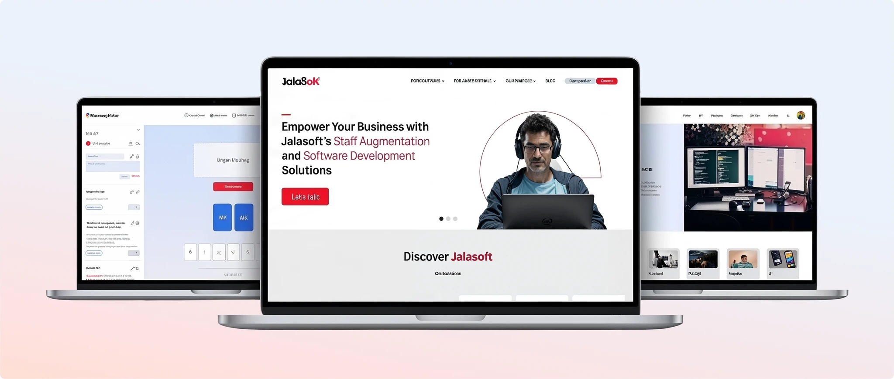
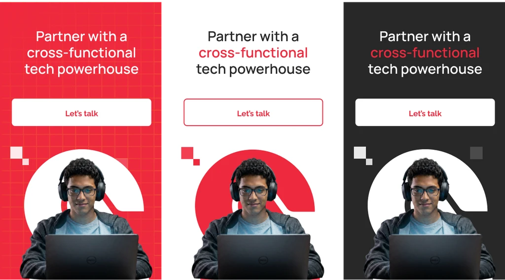
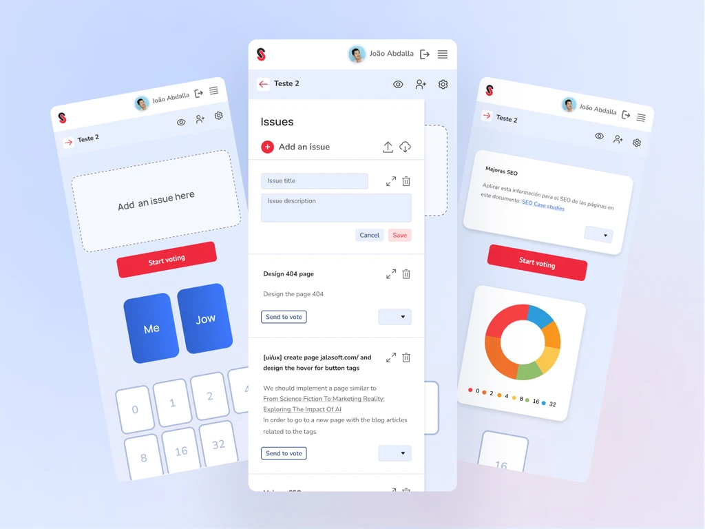
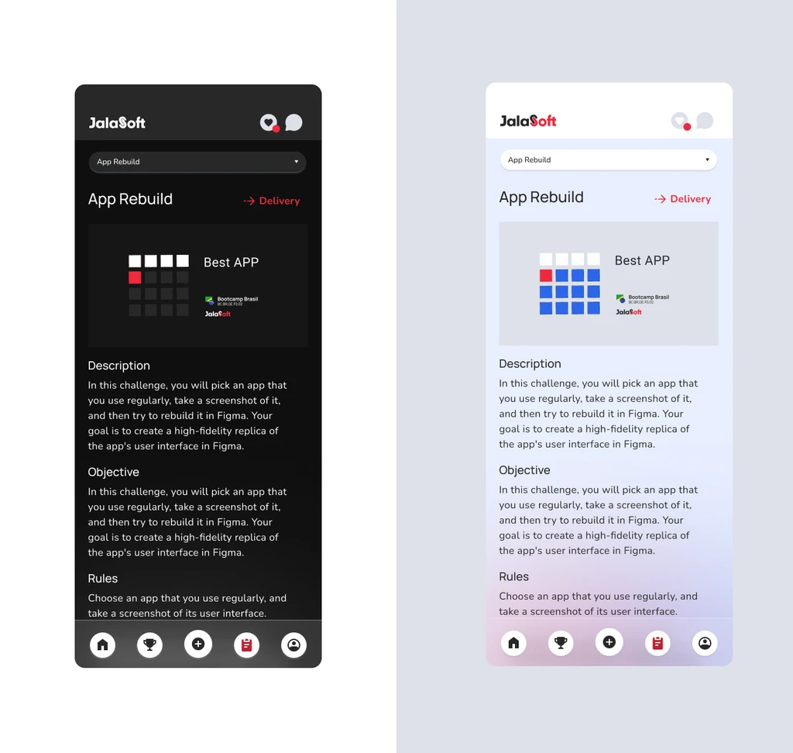
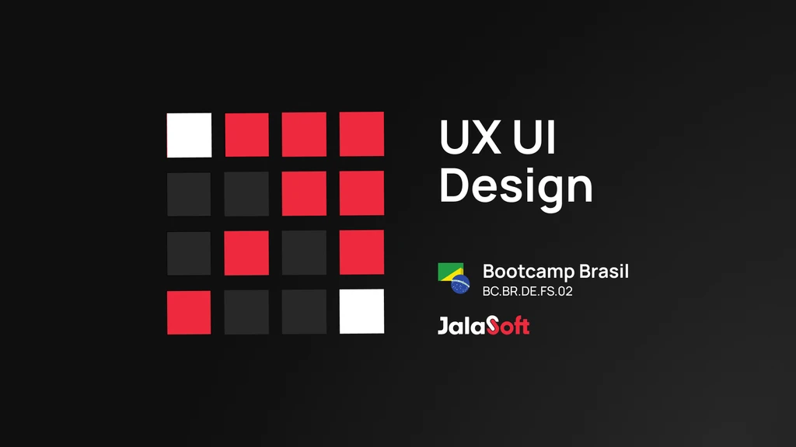

One System, Three Platforms: Proving a Design System by Using It Under Pressure
A design system means nothing until someone bets a real project on it. Here is how one built from a brand guideline got tested on the company's hardest internal platform first, then reused twice more because it held up.

Building the system, then proving it scales
I joined Jalasoft in 2021. Before I arrived, every internal tool looked like it came from a different company: different type scales, different button styles, different shades of the same brand color, because each one had been designed in isolation. One of my first tasks was to fix that at the root, by turning the company's Brand Guidelines into a working Design System: a typography scale in Manrope and Nunito, and a four-tier color system anchored by the brand's Pantone red.
A design system on paper is a guess. It only becomes real the first time a live project depends on it. That test came almost immediately, with the redesign of the company's internal BPM platform, the tool every employee used for tasks and hiring. It was the least forgiving place to find out if the system actually worked, and it did. That result is why the system got reused twice more: on the company website, and on a new team estimation tool called Planning Poker.
This case follows that sequence. Not three unrelated projects that happen to share a color palette, but one system, proven once under real conditions, then extended. Alongside that, I designed and taught a UX/UI curriculum across Latin America, and later moved into direct client work, both covered briefly below.
The Design System
It started with the company's Brand Guidelines. From that starting point, I built a complete design system: a typographic hierarchy covering titles, body copy, and buttons, and a three-tier color system (primary, secondary, and tertiary) anchored by a red brand color (Pantone red, #EF293D).
This became the shared foundation every platform below was built on top of.

BPM Platform Redesign
The system's first real assignment was also its hardest: a redesign of the company's internal BPM platform, the tool employees used to manage tasks and the hiring process. This was not a greenfield product where a clean system is easy to apply. It was a live, in-use platform with real workflows and real complaints, surfaced through direct UX interviews with the people who used it every day.
I redesigned the navbar, the task views, and the full hiring process flow, using only the components already defined in the system. If the type scale or the color tokens did not hold up under an interface this dense, this is where it would have shown.
It held up. And that gave me something to point to when the next two projects came up.

Website, Planning Poker, and Elearn App
With the system proven on the hardest internal case, extending it to the rest of the company's products was a different kind of work: less about testing the system and more about applying it fast, across products with very different shapes.
The company site needed a redesign: a new hero, the metrics that mattered (1,000+ employees, years in the market), a working blog, and a dedicated page for the bootcamp program. Every type and color decision came straight from the system already in place, which meant the visual identity question was already answered before the project started.


A lightweight agile estimation tool for teams, built end to end with the same components: problem statement, research & discovery, testing & iteration, and a documented conclusion. Where the BPM redesign took months, this one took a fraction of that, because there was nothing left to decide about how it should look.

The system's furthest reach was a full learning platform for Jalasoft and Jala University's bootcamps, serving students, teachers, and administrators in one connected product. I owned it solo end to end, from stakeholder interviews through final UI, and built every screen on the same Manrope, Nunito, and color tokens established at the start of this case. It has its own full case study on this portfolio.

Training the next generation
UX/UI Design, Full Stack Developer Bootcamp
Six to eight months into the role, I was invited to design and teach the UX/UI Design curriculum inside the company's Full Stack Developer Bootcamp, building the course from scratch and teaching it across 10 to 12 cohorts throughout Latin America.

Moving to direct client engagements
After this internal-facing period, I was allocated directly to client projects. Three of these already have full case studies on this portfolio.
What scaling a system across three products taught me
Testing the system on the hardest project first, instead of the easiest, is what made the next two fast. A system that only survives on simple products has not really been proven.
The website and Planning Poker shipped faster than the BPM redesign for a specific reason: the visual decisions were already made. That speed is the actual return on investment of a design system, not a slide about consistency.
A system built for a dense internal tool does not automatically fit a marketing site or a lightweight app. Each reuse still required judgment calls about which parts of the system to lean on and which to adapt.
Teaching forced me to explain design decisions in principles, not just in Figma files, a different kind of rigor than shipping alone.